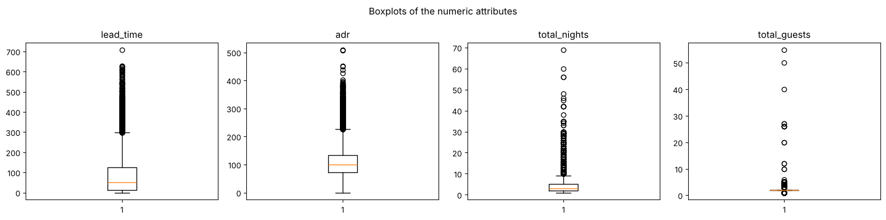

03 — Outlier Analysis
In this notebook we:
- Identify outliers in the main numeric attributes with three statistical methods: IQR, Z-score and the histogram method
- Look for contextual outliers (a price that is unusual for its hotel and month)
- Evaluate whether the outliers are valid observations or problematic values
- Decide how to handle them and save the final dataset used by the models
Basic Concepts
An outlier is a data point that is significantly different from most other points in a dataset. It may come from an unusual event, a measurement or data-entry error, or a change in the process that generates the data.
- Outliers versus noise: noise is a small random variation that is not meaningful; an outlier differs significantly from the normal pattern and may need investigation.
- Global outlier: differs significantly from the entire dataset.
- Contextual (conditional) outlier: unusual only in a specific context. Contextual attributes define the context (here: hotel and arrival month); behavioural attributes are the ones we examine (here:
adr). - Collective outlier: a group of related points that is unusual together. It needs the relationships between records and is not examined here.
All methods in this notebook are unsupervised (the class label is not used) and statistical:
- Parametric: assume a distribution (the Z-score assumes a normal distribution).
- Nonparametric: assume no distribution (IQR / boxplot and the histogram method).
import numpy as np import pandas as pd import matplotlib.pyplot as plt from pathlib import Path FIG_DIR = Path("../figures") df = pd.read_csv("../data/processed/hotel_bookings_clean.csv") print(df.shape)
(86637, 41)
1. Attributes to Check
ATTRIBUTES = ["lead_time", "adr", "total_nights", "total_guests"] df[ATTRIBUTES].describe().round(1)
| lead_time | adr | total_nights | total_guests | |
|---|---|---|---|---|
| count | 86637.0 | 86637.0 | 86637.0 | 86637.0 |
| mean | 80.3 | 107.2 | 3.7 | 2.0 |
| std | 86.1 | 51.3 | 2.7 | 0.8 |
| min | 0.0 | 0.0 | 1.0 | 1.0 |
| 25% | 12.0 | 72.9 | 2.0 | 2.0 |
| 50% | 50.0 | 99.0 | 3.0 | 2.0 |
| 75% | 126.0 | 134.4 | 5.0 | 2.0 |
| max | 709.0 | 510.0 | 69.0 | 55.0 |
fig, axes = plt.subplots(1, 4, figsize=(16, 4)) for ax, col in zip(axes, ATTRIBUTES): ax.boxplot(df[col]) ax.set_title(col) plt.suptitle("Boxplots of the numeric attributes") plt.tight_layout() plt.savefig(FIG_DIR / "out_01_boxplots.png", dpi=150, bbox_inches="tight") plt.show()

2. IQR Method
A value is an outlier if it is below $Q1 - 1.5 \times IQR$ or above $Q3 + 1.5 \times IQR$, where $IQR = Q3 - Q1$.
iqr_rows = [] for col in ATTRIBUTES: q1 = df[col].quantile(0.25) q3 = df[col].quantile(0.75) iqr = q3 - q1 lower = q1 - 1.5 * iqr upper = q3 + 1.5 * iqr n_out = ((df[col] < lower) | (df[col] > upper)).sum() iqr_rows.append({"attribute": col, "Q1": q1, "Q3": q3, "lower": lower, "upper": upper, "outliers": n_out}) iqr_table = pd.DataFrame(iqr_rows).set_index("attribute") iqr_table.round(1)
| Q1 | Q3 | lower | upper | outliers | |
|---|---|---|---|---|---|
| attribute | |||||
| lead_time | 12.0 | 126.0 | -159.0 | 297.0 | 2353 |
| adr | 72.9 | 134.4 | -19.4 | 226.7 | 2511 |
| total_nights | 2.0 | 5.0 | -2.5 | 9.5 | 2990 |
| total_guests | 2.0 | 2.0 | 2.0 | 2.0 | 29939 |
3. Z-score Method
$z = \frac{x - \text{mean}}{\text{std}}$ — a value is an outlier if $|z| > 3$.
z_rows = [] for col in ATTRIBUTES: z = (df[col] - df[col].mean()) / df[col].std() z_rows.append({"attribute": col, "upper limit (z = 3)": df[col].mean() + 3 * df[col].std(), "outliers": (z.abs() > 3).sum()}) z_table = pd.DataFrame(z_rows).set_index("attribute") z_table.round(1)
| upper limit (z = 3) | outliers | |
|---|---|---|
| attribute | ||
| lead_time | 338.5 | 1043 |
| adr | 261.1 | 876 |
| total_nights | 11.9 | 1552 |
| total_guests | 4.4 | 152 |
Note: for total_guests, Q1 = Q3 = 2, so IQR = 0 and the IQR method flags every booking that is not
2 guests (about 30,000). The IQR method is not suitable for this attribute; the Z-score method is used instead.
The Z-score is a parametric method: the mean and standard deviation assume that the data are roughly normal.
lead_time and adr are right-skewed (notebook 05), so the nonparametric IQR and histogram methods are used as a cross-check.
4. Histogram-Based Method (nonparametric)
The values are divided into intervals (bins). Bookings in bins with a low frequency are more likely to be outliers. The outlier score is the inverse of the probability of the bin:
$$OutlierScore = \frac{1}{Probability\ of\ the\ bin}$$
A higher score means a more unusual observation. Here adr is divided into 10 equal-width bins.
adr_bins = pd.cut(df["adr"], bins=10) counts = adr_bins.value_counts().sort_index() hist_table = pd.DataFrame({"bookings": counts, "probability": counts / len(df)}) hist_table["outlier score"] = 1 / hist_table["probability"] hist_table.round(4)
| bookings | probability | outlier score | |
|---|---|---|---|
| adr | |||
| (-0.51, 51.0] | 9385 | 0.1083 | 9.2314 |
| (51.0, 102.0] | 36489 | 0.4212 | 2.3743 |
| (102.0, 153.0] | 26684 | 0.3080 | 3.2468 |
| (153.0, 204.0] | 9715 | 0.1121 | 8.9179 |
| (204.0, 255.0] | 3302 | 0.0381 | 26.2377 |
| (255.0, 306.0] | 842 | 0.0097 | 102.8943 |
| (306.0, 357.0] | 180 | 0.0021 | 481.3167 |
| (357.0, 408.0] | 34 | 0.0004 | 2548.1471 |
| (408.0, 459.0] | 4 | 0.0000 | 21659.2500 |
| (459.0, 510.0] | 2 | 0.0000 | 43318.5000 |
rare_bins = hist_table[hist_table["probability"] < 0.01].index print("Bins with probability < 1% (outlier score > 100): adr above", round(rare_bins[0].left, 1)) print("Bookings in these bins:", adr_bins.isin(rare_bins).sum())
Bins with probability < 1% (outlier score > 100): adr above 255.0 Bookings in these bins: 1062
Only the bins above about €255 have a probability below 1% (outlier score above 100): 1,062 bookings. They are a subset of the 2,511 bookings above the IQR fence (€226.7), so the histogram method points to the most extreme prices, which are peak-season and large-room bookings (section 6.2).
5. Contextual Outliers
A price that is normal in July can be unusual in January. To find contextual outliers for adr:
- Contextual attributes:
hotelandarrival_date_month - Behavioural attribute:
adr
The IQR rule is applied inside each context (each hotel and month) instead of on the whole dataset.
group = df.groupby(["hotel", "arrival_date_month"])["adr"] q1_ctx = group.transform(lambda s: s.quantile(0.25)) q3_ctx = group.transform(lambda s: s.quantile(0.75)) iqr_ctx = q3_ctx - q1_ctx low_ctx = df["adr"] < q1_ctx - 1.5 * iqr_ctx high_ctx = df["adr"] > q3_ctx + 1.5 * iqr_ctx contextual = low_ctx | high_ctx global_out = (df["adr"] < iqr_table.loc["adr", "lower"]) | (df["adr"] > iqr_table.loc["adr", "upper"]) pd.Series({ "Global outliers (IQR on all bookings)": global_out.sum(), "Contextual outliers (IQR per hotel and month)": contextual.sum(), " flagged by both": (global_out & contextual).sum(), " contextual only": (contextual & ~global_out).sum(), " global only": (global_out & ~contextual).sum(), })
Global outliers (IQR on all bookings) 2511 Contextual outliers (IQR per hotel and month) 3936 flagged by both 871 contextual only 3065 global only 1640 dtype: int64
print("Contextual outliers below the normal range:", low_ctx.sum(), "| of which adr = 0:", (low_ctx & (df["adr"] == 0)).sum()) only_context = df[contextual & ~global_out] print("\nContextual-only outliers, reserved room type (top 4):") print(only_context["reserved_room_type"].value_counts().head(4)) only_context[["hotel", "arrival_date_month", "adr", "reserved_room_type", "total_guests"]].head()
Contextual outliers below the normal range: 1074 | of which adr = 0: 883 Contextual-only outliers, reserved room type (top 4): reserved_room_type A 1031 F 561 D 489 G 404 Name: count, dtype: int64
| hotel | arrival_date_month | adr | reserved_room_type | total_guests | |
|---|---|---|---|---|---|
| 120 | Resort Hotel | July | 0.0 | H | 4 |
| 403 | Resort Hotel | July | 0.0 | A | 2 |
| 407 | Resort Hotel | July | 0.0 | A | 1 |
| 1127 | Resort Hotel | August | 8.0 | D | 2 |
| 1275 | Resort Hotel | August | 8.0 | A | 2 |
The two views flag different bookings:
- 1,640 global only: high prices that are normal inside their own context (for example the Resort Hotel in summer). They are not contextual outliers.
- 3,065 contextual only: prices that are unusual for their hotel and month although they are not extreme overall. 1,074 of them are below the normal range, mostly bookings with
adr = 0(883) in months when the usual price is high. The rest are above the normal range for their month; the most common reserved room types are A, F, D and G.
A price of €0 is possible (for example a complimentary booking) and none of these bookings shows signs of a data-entry error, so they describe real prices and are kept. The same price can be normal in one context and unusual in another, which is why the context matters.
6. Evaluating the Outliers
6.1 total_guests: problematic values
df[df["total_guests"] > 5][["adults", "children", "babies", "adr", "market_segment", "is_canceled"]]
| adults | children | babies | adr | market_segment | is_canceled | |
|---|---|---|---|---|---|---|
| 314 | 2 | 10 | 0 | 133.16 | Offline TA/TO | 1 |
| 1426 | 40 | 0 | 0 | 0.00 | Direct | 1 |
| 1474 | 26 | 0 | 0 | 0.00 | Offline TA/TO | 1 |
| 1528 | 50 | 0 | 0 | 0.00 | Direct | 1 |
| 1634 | 26 | 0 | 0 | 0.00 | Offline TA/TO | 1 |
| 1757 | 26 | 0 | 0 | 0.00 | Offline TA/TO | 1 |
| 1785 | 27 | 0 | 0 | 0.00 | Direct | 1 |
| 1828 | 27 | 0 | 0 | 0.00 | Direct | 1 |
| 1866 | 26 | 0 | 0 | 0.00 | Offline TA/TO | 1 |
| 2013 | 26 | 0 | 0 | 0.00 | Offline TA/TO | 1 |
| 2022 | 55 | 0 | 0 | 0.00 | Direct | 1 |
| 2059 | 20 | 0 | 0 | 0.00 | Direct | 1 |
| 2060 | 6 | 0 | 0 | 0.00 | Direct | 1 |
| 2197 | 10 | 0 | 0 | 0.00 | Direct | 1 |
| 2198 | 20 | 0 | 0 | 0.00 | Direct | 1 |
| 36900 | 2 | 0 | 10 | 84.45 | Online TA | 0 |
| 54044 | 1 | 0 | 9 | 95.00 | Corporate | 0 |
The Z-score method flags 152 bookings with 5 or more guests. Bookings with 5 guests (135) are normal family bookings, but the 17 bookings with more than 5 guests are data-entry errors: 20–55 adults in one room with a price of €0, or 9–10 babies with 1–2 adults. A hotel room does not hold these numbers of guests. They are removed.
6.2 adr: valid observations
upper_adr = iqr_table.loc["adr", "upper"] high_adr = df[df["adr"] > upper_adr] print("Bookings with adr above", round(upper_adr, 1), ":", len(high_adr)) print("\nArrival month (top 4):") print(high_adr["arrival_date_month"].value_counts().head(4)) print("\nReserved room type (top 4):") print(high_adr["reserved_room_type"].value_counts().head(4))
Bookings with adr above 226.7 : 2511 Arrival month (top 4): arrival_date_month August 1397 July 574 June 153 May 119 Name: count, dtype: int64 Reserved room type (top 4): reserved_room_type G 587 F 476 D 401 E 370 Name: count, dtype: int64
High prices are mostly in summer months and in larger room types, so they are valid observations (peak-season and family rooms), not errors. They are kept.
6.3 lead_time and total_nights: valid observations
print(df.nlargest(5, "lead_time")[["lead_time", "market_segment", "customer_type", "is_canceled"]], "\n") print(df.nlargest(5, "total_nights")[["total_nights", "market_segment", "customer_type", "adr"]])
lead_time market_segment customer_type is_canceled
3309 709 Direct Transient 0
47345 629 Groups Transient 1
47350 629 Groups Transient 1
44316 626 Groups Transient 1
47206 622 Groups Transient 1
total_nights market_segment customer_type adr
10743 69 Direct Transient 110.00
10742 60 Direct Transient 110.50
7319 56 Offline TA/TO Transient 25.50
27988 56 Online TA Transient 28.79
41467 48 Online TA Transient-Party 0.00
Bookings made up to two years in advance and stays of several weeks are possible in real hotels. They describe real customer behaviour (for example, early bookings are canceled more often), so they are kept. Decision trees are not affected by extreme values, because they split on thresholds.
7. Handling the Outliers
| Attribute | Method | Outliers | Evaluation | Action |
|---|---|---|---|---|
| total_guests | Z-score | 152 (≥ 5 guests) | 17 bookings with > 5 guests are data-entry errors | remove the 17 |
| adr | IQR / Z-score | 2,511 / 876 | peak season, large rooms | keep |
| lead_time | IQR / Z-score | 2,353 / 1,043 | real early bookings | keep |
| total_nights | IQR / Z-score | 2,990 / 1,552 | real long stays | keep |
The histogram and contextual methods examine the same attribute (adr) and show real prices (peak season, specific rooms, a price of €0), so the decision does not change:
only the 17 bookings with more than 5 guests are removed.
before = len(df) df_final = df[df["total_guests"] <= 5].copy() print(f"{before:,} → {len(df_final):,} rows (removed {before - len(df_final)})") df_final.to_csv("../data/processed/hotel_bookings_final.csv", index=False) print("Saved: ../data/processed/hotel_bookings_final.csv")
86,637 → 86,620 rows (removed 17)
Saved: ../data/processed/hotel_bookings_final.csv